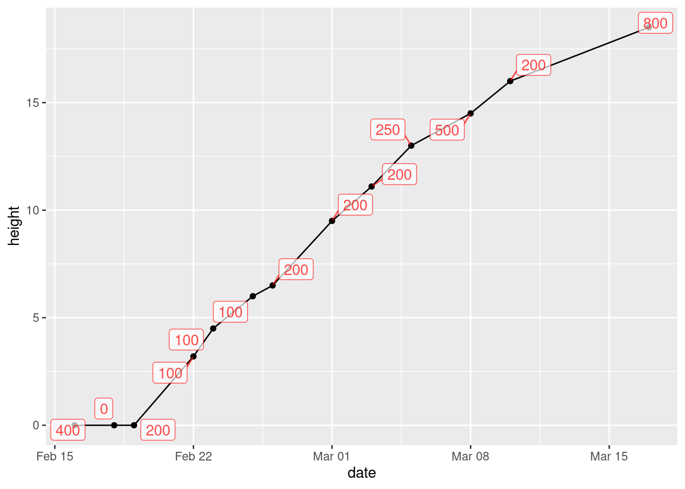
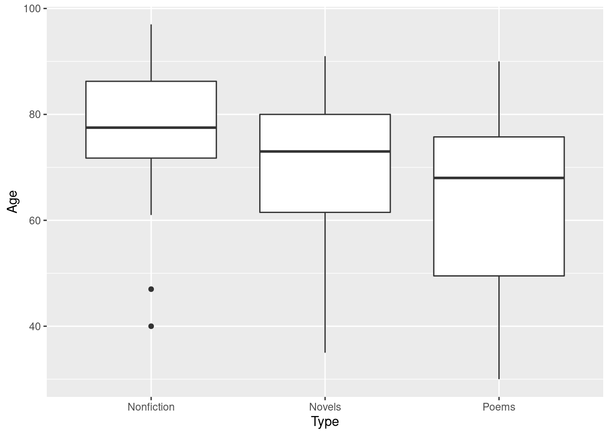
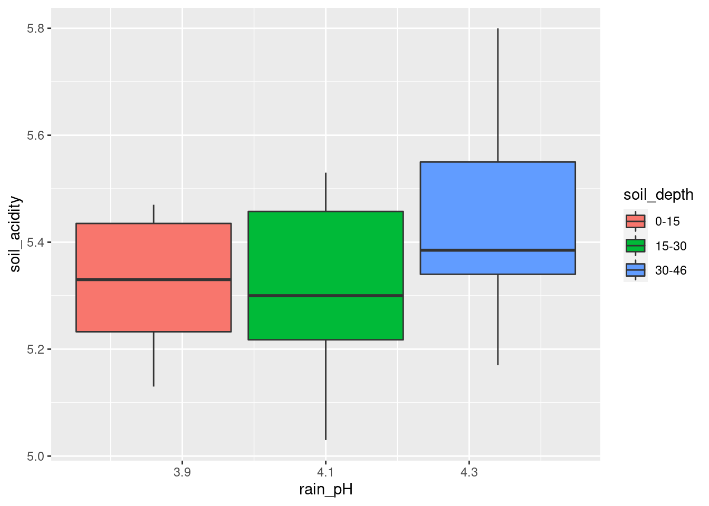
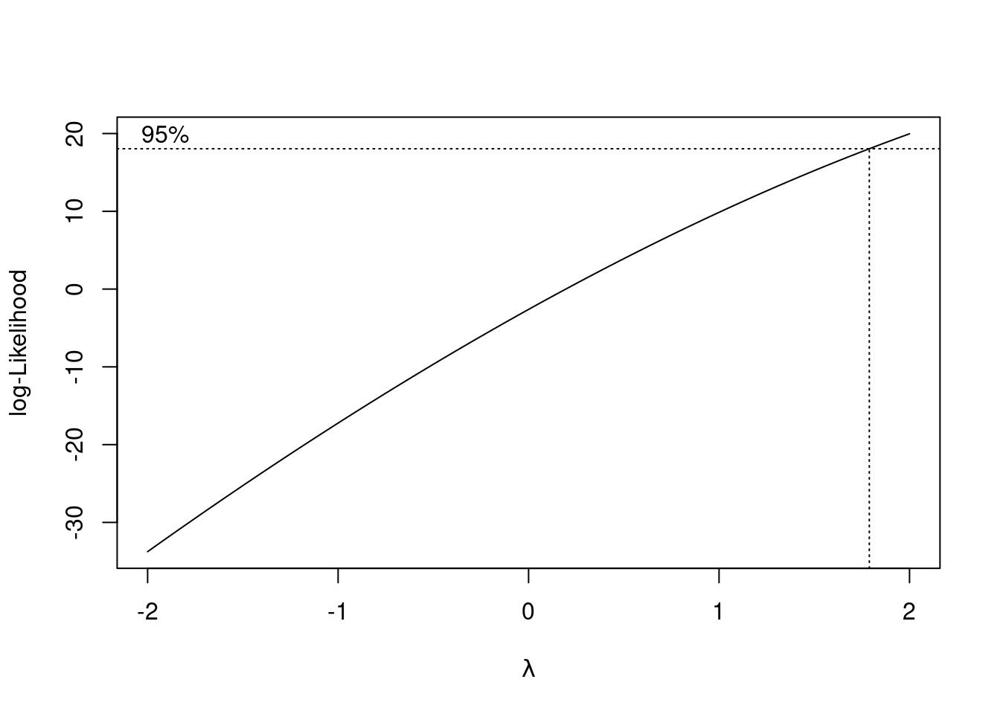

Chapter 5 Data exploration
5.1 North Carolina births
The data in file link are about 500 randomly chosen births of babies in North Carolina. There is a lot of information: not just the weight at birth of the baby, but whether the baby was born prematurely, the ages of the parents, whether the parents are married, how long (in weeks) the pregnancy lasted (this is called the “gestation”) and so on.
- Read in the data from the file into R, bearing in mind what type of file it is.
Solution
This is a .csv file (it came from a spreadsheet), so it
needs reading in accordingly. Work directly from the URL (rather
than downloading the file, unless you are working offline):
##
## ── Column specification ───────────────────────────────────────────
## cols(
## `Father Age` = col_double(),
## `Mother Age` = col_double(),
## `Weeks Gestation` = col_double(),
## `Pre-natal Visits` = col_double(),
## `Marital Status` = col_double(),
## `Mother Weight Gained` = col_double(),
## `Low Birthweight?` = col_double(),
## `Weight (pounds)` = col_double(),
## `Premie?` = col_double(),
## `Few Visits?` = col_double()
## )This shows you which variables the data set has (some of the names got a bit mangled), and it shows you that they are all integers except for the birth weight (a decimal number).
The easiest way to find out how many rows and columns there are is simply to list the data frame:
or you can take a “glimpse” of it:
## Rows: 500
## Columns: 10
## $ `Father Age` <dbl> 27, 35, 34, NA, 35, 32, 33, 38, 28…
## $ `Mother Age` <dbl> 26, 33, 22, 16, 33, 24, 33, 35, 29…
## $ `Weeks Gestation` <dbl> 38, 40, 37, 38, 39, 36, 38, 38, 40…
## $ `Pre-natal Visits` <dbl> 14, 11, 10, 9, 12, 12, 15, 16, 5, …
## $ `Marital Status` <dbl> 1, 1, 2, 2, 1, 1, 2, 1, 1, 2, 1, 1…
## $ `Mother Weight Gained` <dbl> 32, 23, 50, NA, 15, 12, 60, 2, 20,…
## $ `Low Birthweight?` <dbl> 0, 0, 0, 0, 0, 0, 0, 0, 0, 1, 0, 0…
## $ `Weight (pounds)` <dbl> 6.8750, 6.8125, 7.2500, 8.8125, 8.…
## $ `Premie?` <dbl> 0, 0, 0, 0, 0, 1, 0, 0, 0, 1, 0, 0…
## $ `Few Visits?` <dbl> 0, 0, 0, 0, 0, 0, 0, 0, 1, 0, 0, 0…Either of these displays show that there are 500 rows (observations, here births) and 10 columns (variables), and they both show what the variables are called. So they’re both good as an answer to the question.
What you’ll notice is that the variables have spaces in their
names, which will require special handling later. These outputs show
you what to do about those spaces in variable names: surround the
variable name with “backticks”. (On my keyboard, that’s on the key
to the left of number 1, where the squiggle is, that looks like a
backwards apostrophe. Probably next to Esc, depending on the
layout of your keyboard.)
Although almost all of the variables are stored as integers, the ones that have a question mark in their name are actually “logical”, true or false, with 1 denoting true and 0 false. We could convert them later if we want to. (A question mark is not a traditional character to put in a variable name, so we have to surround these variables with backticks too.)
- From your output, verify that you have the right number of observations and that you have several variables. Which of your variables correspond to birthweight, prematureness and length of pregnancy? (You might have to make guesses based on the names of the variables.)
Solution
I do indeed have 500 observations on 10 variables (“several”). (If
you don’t have several variables, check to see that you didn’t use
read_delim or something by mistake.) After the
“500 observations of 10 variables” line(s) in each case, you see all the
variables by name, with what type of values they have,
these are mostly int or integer.
and the first few of the
values.
Other possible variable types are num for (real, decimal) numbers such as birth weight, chr for text, and Factor (with the number of levels) for factors/categorical variables. We don’t have any of the last two here. There is also lgl for logical, things that were actually recorded as TRUE or FALSE. We have some variables that are actually logical ones, but they are recorded as integer values.
The variable Weight (pounds) is the birthweight (in pounds),
Premie? is 1 for a premature baby and 0 for a full-term baby,
and Weeks Gestation is the number of weeks the pregnancy
lasted. Don’t forget to put backticks around each of those when
you use them
later.
The backticks look different from each other for annoying technical reasons, but they’re all backticks.
- The theory behind the \(t\)-test (which we do later) says that the distribution of birth weights should be (approximately) normally distributed. Obtain a histogram of the birth weights. Does it look approximately normal? Comment briefly. (You’ll have to pick a number of bins for your histogram first. I don’t mind very much what you pick, as long as it’s not obviously too many or too few bins.)
Solution
You’ll have seen that I often start with 10 bins, or maybe not quite that many if I don’t have much data, and this is a decent general principle. That would give

which is perfectly acceptable. You can try something a bit more or a bit less, and see how you like it in comparison. What you are looking for is a nice clear picture of shape. If you have too few bins, you’ll lose the shape:

(is that leftmost bin an indication of skewness or some observations that happen to be smallish?)
And if you have too many, the shape will be there, but it will be hard to make out in all the noise, with frequencies going up and down:

I generally am fairly relaxed about the number of bins you use, as long as it’s not clearly too few or too many. You might have done exercises in the past that illustrate that the choice of number of bins (or the class intervals where you move from one bin to the next, which is another issue that I won’t explore here) can make an appreciable difference to how a histogram looks. Extra: I had some thoughts about this issue that I put in a blog post, that you might like to read: link. The nice thing about Sturges’ rule, mentioned there, is that you can almost get a number of bins for your histogram in your head (as long as you know the powers of 2, that is). What you do is to start with your sample size, here \(n=500\). You find the next power of 2 above that, which is here \(512=2^9\). You then take that power and add 1, to get 10 bins. If you don’t like that, you can get R to calculate it for you:
## [1] 10The place where Sturges’ rule comes from is an assumption of normal data (actually a binomial approximation to the normal, backwards though that sounds). If you have less than 30 observations, you’ll get fewer than 6 bins, which won’t do much of a job of showing the shape. Rob Hyndman wrote a about Sturges’ rule in which he asserts that it is just plain wrong (if you have taken B57, this note is very readable).
So what to use instead? Well, judgment is still better than something automatic, but if you want a place to start from, something with a better foundation than Sturges is the Freedman-Diaconis rule. This, in its original formulation, gives a bin width rather than a number of bins:
\[ w=2(IQR)n^{-1/3} \]
The nice thing about this is that it uses the interquartile range, so
it won’t be distorted by outliers. geom_histogram can take a
bin width, so we can use it as follows:
## [1] 0.4094743
R also has
## [1] 26which turns the Freedman-Diaconis rule into a number of bins rather
than a binwidth; using that gives the same histogram as we got with binwidth.
In my opinion, Freedman-Diaconis tends to give too many bins (here there are 26 rather than the 10 of Sturges). But I put it out there for you to make your own call.
Another way to go is a “density plot”. This is a smoothed-out version of a histogram that is not obviously frequencies in bins, but which does have a theoretical basis. It goes something like this:

geom_density has an optional parameter that controls how smooth
or wiggly the picture is, but the default is usually good.
Alright, before we got distracted, we were assessing normality. What about that?
It is mostly normal-looking, but I am suspicious about those very low birth weights, the ones below about 4 pounds. There are a few too many of those, as I see it.
If you think this is approximately normal, you need to make some comment along the lines of “the shape is approximately symmetric with no outliers”. I think my first answer is better, but this answer is worth something, since it is a not completely unreasonable interpretation of the histogram.
I have been making the distinction between a histogram (for one
quantitative variable) and side-by-side boxplots (for one quantitative
variable divided into groups by one categorical variable). When you
learned the boxplot, you probably learned it in the context of one
quantitative variable. You can draw a boxplot for that, too, but the
ggplot boxplot has an x as well as a
y. What you do to make a single boxplot is to set the
x equal 1, which produces a weird \(x\)-axis (that you ignore):

The high weight is actually an outlier, but look at all those outliers at the bottom! When Tukey, a name we will see again, invented the boxplot in the 1950s, 500 observations would have been considered a big data set. He designed the boxplot to produce a sensible number of outliers for the typical size of data set of his day, but a boxplot of a large data set tends to have a lot of outliers that are probably not really outliers at all.
I think the reason for those extra very low values is that they are the premature births (that can result in very small babies). Which leads to the additional question coming up.
5.2 More about the NC births
This is an exploration of some extra issues around the North Carolina births data set.
- How short does a pregnancy have to be, for the birth to be classified as “premature”? Deduce this from the data, by drawing a suitable graph or otherwise.
Solution
##
## ── Column specification ───────────────────────────────────────────
## cols(
## `Father Age` = col_double(),
## `Mother Age` = col_double(),
## `Weeks Gestation` = col_double(),
## `Pre-natal Visits` = col_double(),
## `Marital Status` = col_double(),
## `Mother Weight Gained` = col_double(),
## `Low Birthweight?` = col_double(),
## `Weight (pounds)` = col_double(),
## `Premie?` = col_double(),
## `Few Visits?` = col_double()
## )To figure it out from the data, we can
see how Weeks Gestation depends
on Premie?. Some possibilities are boxplots or a
scatterplot. Either of the first two graphs would get full credit (for
the graphing part: you still have to do the explanation) if this
were being marked:
## Warning: Removed 1 rows containing non-finite values
## (stat_boxplot).
The warning is because the prematurity of one of the babies is not known. Or
## Warning: Removed 1 rows containing missing values (geom_point).
The same warning again, for the same reason.
Notice how the graphs are similar in syntax, because the
what-to-plot is the same (apart from the factor thing) and we
just make a small change in
how-to-plot-it. In the boxplot, the thing on the \(x\)-scale needs to be
categorical, and Premie? is actually a number, so we’d better
make it into a factor, which is R’s version of a categorical
variable.
Premie. is actually a categorical variable (“premature” or
“not premature”)
masquerading as a quantitative one (1 or 0). It is an “indicator variable”, if
you’re familiar with that term.
It looks as if the breakpoint is 37 weeks: a pregnancy at least that
long is considered normal, but a shorter one ends with a premature
birth. Both plots show the same thing: the `Premie?=1` births
all go with short pregnancies, shorter than 37 weeks. This is
completely clear cut.
Another way to attack this is to use summarize, finding the
max and min:
only this is for all the babies, premature or not.
I explain the missing values below. So we want it by prematurity,
which means a group_by first:
bw %>% group_by(`Premie?`) %>%
summarize( n=n(),
min=min(`Weeks Gestation`),
max=max(`Weeks Gestation`))group_by with a number works, even though using the number
in Premie? in a boxplot didn’t. group_by just uses
the distinct values, whether they are numbers, text or factor levels.
Any of these graphs or summaries will help you answer the question, in the same way. The ultimate issue here is “something that will get the job done”: it doesn’t matter so much what.
In R, NA means “missing”. When you try to compute something
containing a missing value, the answer is usually missing (since you
don’t know what the missing value is). That’s why the first
summarize gave us missing values: there was one missing weeks
of gestation in with all the ones for which we had values, so the max
and min had to be missing as well. In the second summarize,
the one by whether a baby was born prematurely or not, we learn a bit
more about that missing Premie?: evidently its weeks of
gestation was missing as well, since the min and max of that were
missing.
If there had been a weeks of gestation, we could have figured out whether it was premature or not, according to whether the weeks of gestation was less than 37.
Here’s that baby. I’m doing a bit of fiddling to show all the columns (as rows, since there’s only one actual row). Don’t worry about the second line of code below; we will investigate that later.
The only thing that was missing was its weeks of gestation, but that prevented anyone from figuring out whether it was premature or not.
- Explore the relationship between birth weight and length of pregancy (“gestation”) using a suitable graph. What do you see?
Solution
This needs to be a scatterplot because these are both quantitative variables:
## Warning: Removed 1 rows containing missing values (geom_point).
You see a rather clear upward trend. Those very underweight babies came from very short pregnancies, but the vast majority of pregnancies were of more or less normal length (40 weeks is normal) and resulted in babies of more or less normal birth weight.
I want to illustrate something else: how about colouring the
births that were premature? Piece of cake with ggplot:
## Warning: Removed 1 rows containing missing values (geom_point).
That was rather silly because ggplot treated prematureness as a continuous variable, and plotted the values on a dark blue-light blue scale. This is the same issue as on the boxplot above, and has the same solution:
## Warning: Removed 1 rows containing missing values (geom_point).
Better.
With the normal-length pregnancies (red), there seems to be no relationship between length of pregnancy and birth weight, just a random variation. But with the premature births, a shorter pregnancy typically goes with a lower birth weight. This would be why the birth weights for the premature births were more variable.
- Do a web search to find the standard (North American)
definition of a premature birth. Does that correspond to what you saw
in the data? Cite the website you used, for example by saying
“according to
URL, ldots”, withURLreplaced by the address of the website you found.
Solution
The website http://www.mayoclinic.org/diseases-conditions/premature-birth/basics/definition/con-20020050 says that “a premature birth is one that occurs before the start of the 37th week of pregnancy”, which is exactly what we found. (Note that I am citing the webpage on which I found this, and I even made it into a link so that you can check it.) The Mayo Clinic is a famous hospital system with locations in several US states, so I think we can trust what its website says.
5.3 Nenana, Alaska
Nenana, Alaska, is about 50 miles west of Fairbanks. Every spring, there is a contest in Nenana. A wooden tripod is placed on the frozen river, and people try to guess the exact minute when the ice melts enough for the tripod to fall through the ice. The contest started in 1917 as an amusement for railway workers, and has taken place every year since. Now, hundreds of thousands of people enter their guesses on the Internet and the prize for the winner can be as much as $300,000.
Because so much money is at stake, and because the exact same tripod is placed at the exact same spot on the ice every year, the data are consistent and accurate. The data are in link.
- Read the data into R. Note that the values are
separated by tabs rather than spaces, so you’ll need an
appropriate
read_to read it in.
Solution
These are “tab-separated values”, so read_tsv is the
thing, as for the Australian athletes:
##
## ── Column specification ───────────────────────────────────────────
## cols(
## Year = col_double(),
## JulianDate = col_double(),
## `Date&Time` = col_character()
## )Use whatever name you like for the data frame. One that is different
from any of the column headers is smart; then it is clear whether you
mean the whole data frame or one of its columns. ice or
melt or anything like that would also be good.
I haven’t asked you to display or check the data (that’s coming up), but if you look at it and find that it didn’t work, you’ll know to come back and try this part again. R usually gets it right or gives you an error.
If you look at the data, they do appear to be separated by spaces, but the text version of the date and time also have spaces in them, so things might go astray if you try and read the values in without recognizing that the actual separator is a tab:
##
## ── Column specification ───────────────────────────────────────────
## cols(
## `Year JulianDate Date&Time` = col_character()
## )## Warning: 87 parsing failures.
## row col expected actual file
## 1 -- 1 columns 5 columns 'http://www.utsc.utoronto.ca/~butler/c32/nenana.txt'
## 2 -- 1 columns 5 columns 'http://www.utsc.utoronto.ca/~butler/c32/nenana.txt'
## 3 -- 1 columns 5 columns 'http://www.utsc.utoronto.ca/~butler/c32/nenana.txt'
## 4 -- 1 columns 5 columns 'http://www.utsc.utoronto.ca/~butler/c32/nenana.txt'
## 5 -- 1 columns 5 columns 'http://www.utsc.utoronto.ca/~butler/c32/nenana.txt'
## ... ... ......... ......... ....................................................
## See problems(...) for more details.Ouch! A hint as to what went wrong comes from looking at the read-in data frame:
Those t symbols mean “tab character”, which is our hint that
the values were separated by tabs rather than spaces.
More detail (if you can bear to see it) is here:
The first line of the data file (with the variable names in it) had no
spaces, only tabs, so read_delim thinks there is one
column with a very long name, but in the actual data, there are
five space-separated columns. The text date-times are of the
form “April 30 at 11:30 AM”, which, if you think it’s all separated
by spaces, is actually 5 things: April, 30, at and so on. These are
the only things that are separated by spaces, so, from that point of
view, there are five columns.
- Find a way of displaying how many rows and columns your data frame has, and some of the values. Describe the first and last of the variables that you appear to have.
Solution
The easiest is just to display the tibble:
Alternatively, you can take a glimpse of it:
## Rows: 87
## Columns: 3
## $ Year <dbl> 1917, 1918, 1919, 1920, 1921, 1922, 1923, 192…
## $ JulianDate <dbl> 120.4795, 131.3983, 123.6066, 132.4490, 131.2…
## $ `Date&Time` <chr> "April 30 at 11:30 AM", "May 11 at 9:33 AM", …There are 87 years, and 3 columns (variables). The first column is year, and the last column is the date and time that the tripod fell into the river, written as a piece of text. I explain the second column in a moment.
- Dates and times are awkward to handle with software. (We
see more ways later in the course.) The column
JulianDateexpresses the time that the tripod fell through the ice as a fractional number of days since December 31. This enables the time (as a fraction of the way through the day) to be recorded as well, the whole thing being an ordinary number. Make a histogram of the Julian dates. Comment briefly on its shape.
Solution
With a ggplot histogram, we need a number of bins
first. I can do Sturges’ rule in my head: the next power of 2 up
from 87 (our \(n\)) is 128, which is \(2^7\), so the base 2 log of
87 rounds up to 7. That plus one is 8, so we need 8 bins. For
you, any not-insane number of bins will do, or any not-insane
bin width, if you want to go that way:

Note that you need to type JulianDate exactly as it
appears, capital letters and all. R is case-sensitive.
This histogram looks more or less symmetric (and, indeed, normal). I really don’t think you can justify an answer other than “symmetric” here. (Or “approximately normal”: that’s good too.) If your histogram is different, say so. I think that “hole” in the middle is not especially important.
We haven’t done normal quantile plots yet, but looking ahead:

That hugs the line pretty well, so I would call it close to normally-distributed. It bulges away from the line because there are more values just below 120 than you would expect for a normal. This corresponds to the histogram bar centred just below 120 being taller than you would have expected. That is to say, the principal deviation from normality is not the hole on the histogram, the bar centred around 123 being too short, but that the bar centred just below 120 is too tall.
Extra: looking way ahead (to almost the end of the R stuff), this is how you handle the dates and times:
library(lubridate)
nenana %>%
mutate(longdt = str_c(Year, " ", `Date&Time`)) %>%
mutate(datetime = ymd_hm(longdt, tz = "America/Anchorage"))I am not doing any further analysis with these, so just displaying them is good.
I have to do a preliminary step to get the date-times with their year in one place. str_c glues pieces of text together: in this case, the year, a space, and then the rest of the
Date&Time. I stored this in longdt. The second mutate is the business end of it: ymd_hm takes a piece of text containing a year, month (by name or number), day, hours, minutes in that order, and extracts those things from it, storing the whole thing as an R date-time. Note that the AM/PM was handled properly.
The benefit of doing that is we can extract anything from the dates, such as the month or day of week, or take differences between the dates. Or even check that the Julian dates were calculated correctly (the lubridate function is called yday for “day of year”):
nenana %>%
mutate(longdt = str_c(Year, " ", `Date&Time`)) %>%
mutate(datetime = ymd_hm(longdt, tz = "America/Anchorage")) %>%
mutate(jd = yday(datetime)) ->
nenana2
nenana2 %>% select(JulianDate, jd, datetime)Hmm, some of those are off by one. What do the off-by-one ones have in common? Let’s look at more of them. round
rounds off to the nearest integer (since these are actually decimal numbers):
The ones shown here are all after noon, and the Julian date in
the data file appears as one more than the one calculated by
lubridate. What has actually happened is a quirk of how tibbles
are displayed: they show 3 significant digits, rounded. The
Julian dates given by yday are the whole-number part, so the
ones in the data value are that plus more than 0.5, which will round
up. The first line of code below displays 6 significant digits
rather than only three:
options(pillar.sigfig = 6)
nenana2 %>%
filter(round(JulianDate) != round(jd)) %>%
select(JulianDate, jd, datetime)Displaying more decimals shows that I was right: jd is (to this accuracy) a whole number, but JulianDate is a decimal with fractional part greater than 0.50.
Now I have to turn the extra signficant digits off:
- Plot
JulianDateagainstYearon a scatterplot. What recent trends, if any, do you see? Comment briefly.
Solution
geom_point:

This is actually a small-but-real downward trend, especially since about 1960, but the large amount of variability makes it hard to see, so I’m good with either “no trend” or “weak downward trend” or anything roughly like that. There is definitely not much trend before 1960, but most of the really early break-ups (less than about 118) have been since about 1990.
You can even add to the ggplot, by putting a smooth trend on it:
## `geom_smooth()` using method = 'loess' and formula 'y ~ x'
This is R’s version of a trend that is not constrained to be linear (so that it “lets the data speak for itself”).
Now there is something obvious to see: after about 1960, there is a clear downward trend: the ice is breaking up earlier on average every year. Even though there is a lot of variability, the overall trend, viewed this way, is clear.
What does this mean, in practice? This notion of the ice melting earlier than it used to is consistent all over the Arctic, and is one more indication of climate change. Precisely, it is an indication that climate change is happening, but we would have to delve further to make any statements about the cause of that climate change.
5.4 Computerized accounting
Beginning accounting students need to learn to learn to audit in a computerized environment. A sample of beginning accounting students took each of two tests: the Computer Attitude Scale (CAS) and the Computer Anxiety Rating Scale (CARS). A higher score in each indicates greater anxiety around computers. The test scores are scaled to be between 0 and 5. Also noted was each student’s gender. The data are in http://www.utsc.utoronto.ca/~butler/c32/compatt.txt. The data values are separated by spaces.
- Read the data into R. Do you have what you expected? Explain briefly.
Solution
Read in and display the data. This, I think, is the easiest way.
my_url <- "https://raw.githubusercontent.com/nxskok/datafiles/master/compatt.txt"
anxiety=read_delim(my_url," ")##
## ── Column specification ───────────────────────────────────────────
## cols(
## gender = col_character(),
## CAS = col_double(),
## CARS = col_double()
## )There is a total of 35 students with a CAS score, a CARS score and a gender recorded for each. This is in line with what I was expecting. (You can also note that the genders appear to be a mixture of males and females.)
- How many males and females were there in the sample?
Solution
Most easily count:
This also works (and is therefore good):
I want you to use R to do the counting (that is, don’t just list out
the whole data set with print(n=Inf) and count the males and
females yourself). This is because you might have thousands of data
values and you need to learn how to get R (or, later, SAS) to count them for
you.
15 females and 20 males, which you should say. I made a point of not saying that it is enough to get the output with the answers on it, so you need to tell me what the answer is.
- Do the CAS scores tend to be higher for females or for males? Draw a suitable graph to help you decide, and come to a conclusion.
Solution
Gender is categorical and CAS score is quantitative, so a boxplot would appear to be the thing:

The median for males is slightly higher, so male accountants are more anxious around computers than female accountants are.
If you wish, side-by-side (or, better, above-and-below) histograms would also work:

If you go this way, you have to make a call about where the centres of the histograms are. I guess the male one is slightly further to the right, but it’s not so easy to tell. (Make a call.)
- Find the median CAS scores for each gender. Does this support what you saw on your plot? Explain briefly.
Solution
Group-by and summarize:
The median is a bit higher for males, which is what I got on my boxplot (and is apparently the same thing as is on the histograms, but it’s harder to be sure there).
- Find the mean and standard deviation of both CAS and CARS scores (for all the students combined, ie. not separated by gender) without naming those columns explicitly.
Solution
Without naming them explicitly means using some other way to pick them out of the data frame, summarize with across.
The basic across comes from asking yourself what the names of those columns have in common: they start with C and the gender column doesn’t:
Another way is to ask what property these two columns have in common: they are the only two numeric (quantitative) columns. This means using an across with a where inside it, thus:
Read the first one as “across all the columnns whose names start with S, find the mean and SD of them.” The second one is a little clunkier: “acrosss all the columns for which is.numeric is true, find the mean and SD of them”. A shorter way for the second one is “across all the numeric (quantitative) columns, find their mean and SD”, but then you have to remember exactly how to code that. The reason for the list is that we are calculating two statistics for each column that we find. I am using a “named list” so that the mean gets labelled with an m on the end of the column name, and the SD gets an s on the end.
Either of these is good, or anything equivalent (like noting that the two anxiety scales both ends\_with S):
Because I didn’t say otherwise, you should tell me what the means and SDs are, rounding off suitably: the CAS scores have mean 2.82 and SD 0.48, and the CARS scores have mean 2.77 and SD 0.67.
Yet another way to do it is to select the columns you want first (which you can do by number so as not to name them), and then find the mean and SD of all of them:
This doesn’t work:
## gender CAS CARS
## Length:35 Min. :1.800 Min. :1.000
## Class :character 1st Qu.:2.575 1st Qu.:2.445
## Mode :character Median :2.800 Median :2.790
## Mean :2.816 Mean :2.771
## 3rd Qu.:3.150 3rd Qu.:3.290
## Max. :3.750 Max. :4.000because, although it gets the means, it does not get the standard deviations. (I added the SD to the original question to make you find a way other than this.)
In summary, find a way to get those answers without naming those columns in your code, and I’m good.
In case you were wondering about how to do this separately by gender, well, put the group\_by in like you did before:
anxiety %>% group_by(gender) %>%
summarize(across(where(is.numeric), list(m = ~mean(.), s = ~sd(.))))or
anxiety %>% group_by(gender) %>%
summarize(across(starts_with("C"), list(m = ~mean(.), s = ~sd(.))))The male means are slightly higher on both tests, but the male standard deviations are a little smaller. You might be wondering whether the test scores are related. They are both quantitative, so the obvious way to find out is a scatterplot:

The two variables can be on either axis, since there is no obvious response or explanatory variable. A higher score on one scale goes with a higher score on the other, suggesting that the two scales are measuring the same thing.
This plot mixes up the males and females, so you might like to distinguish them, which goes like this:

There is a slight (but only slight) tendency for the males to be up and to the right, and for the females to be down and to the left. This is about what you would expect, given that the male means are slightly bigger on both scores, but the difference in means is not that big compared to the SD.
5.5 Test scores in two classes
Open R Studio. Create a new Text File by selecting File, New File and Text File. You should see a new empty, untitled window appear at the top left. In that window, type or copy the data below (which are scores on a test for students in two different classes):
class score
ken 78
ken 62
ken 59
ken 69
ken 81
thomas 83
thomas 77
thomas 63
thomas 61
thomas 79
thomas 72
Save the file, using a filename of your choice (with, perhaps, extension
.txt). Or, if you prefer, use the one at
link.
- Read the data into a data frame called
marks, usingread_delim, and list the data frame (by typing its name) to confirm that you read the data values properly. Note that the top line of the data file contains the names of the variables, as it ought to.
Solution
I was lazy and used the one on the web, the values being separated (“delimited”) by exactly one space:
##
## ── Column specification ───────────────────────────────────────────
## cols(
## class = col_character(),
## score = col_double()
## )If you copied and pasted, or typed in, the data values yourself, use the local file name (such as marks.txt) in place of the URL.
Extra: in the old days, when we used read.table (which actually also
works here), we needed to also say header=T to note that the
top line of the data file was variable names. With
read_delim, that’s the default, and if the top line is
not variable names, that’s when you have to say so. If I cheat,
by skipping the first line and saying that I then have no column names, I get:
##
## ── Column specification ───────────────────────────────────────────
## cols(
## X1 = col_character(),
## X2 = col_double()
## )Column names are supplied (X1 and X2). I could also
supply my own column names, in which case the file needs not to have
any, so I need the skip again:
##
## ── Column specification ───────────────────────────────────────────
## cols(
## instructor = col_character(),
## mark = col_double()
## )- * Obtain side-by-side boxplots of the scores for each class.
Solution

Remember: on a regular boxplot, Boxplots can also go across the page, but for us, they don’t. the groups go across (\(x\)), the variable measured goes up (\(y\)).
Extra: this might work:

It does. That was a guess. So if you want sideways boxplots, this is
how you can get them. Long group names sometimes fit better on the \(y\)-axis, in which case flipping the axes will help.
(The x and y happen
before the coordinate-flip, so they are the same as above, not
the same way they come out.)
- Do the two classes appear to have similar or different scores, on average? Explain briefly.
Solution
The median for Thomas’s class appears to be quite a bit higher than for Ken’s class (the difference is actually about 6 marks). It’s up to you whether you think this is a big difference or not: I want you to have an opinion, but I don’t mind so much what that opinion is. Having said that the medians are quite a bit different, note that the boxes overlap substantially, so that the distributions of scores are pretty similar (or, the quartiles of scores are similar, or, the IQR of scores is similar for the two groups). If you say that, it’s good, but I’m not insisting that you do.
- Obtain a boxplot of all the scores together, regardless of which class they came from.
Solution
Replace your \(x\)-coordinate by some kind of dummy thing like
1 (factor(1) also works):

The \(x\)-axis is kind of dopey, so you just ignore it. It is possible to remove it, but that is more work than it’s worth, and I didn’t get rid of the ticks below:
ggplot(marks, aes(x = 1, y = score)) + geom_boxplot() +
theme(
axis.text.x = element_blank(),
axis.title.x = element_blank()
)
- Compute the median score (of all the scores together). Does this seem about right, looking at the boxplot? Explain briefly.
Solution
Three ways to get the median score. I like the first one best:
## [1] 72## [1] 72summarize is the tidyverse “verb” that does what
you want here. (The same idea gets the mean score for each class, below.)
The other ways use the basic function median. To make that
work, you need to say that the variable score whose median
you want lives in the data frame marks. These are two ways to
do that.
Extra: if you wanted median by group, this is the approved
(tidyverse) way:
To get something by group, the extra step is group_by, and
then whatever you do after that is done for each group.
You can now go back and compare these medians with the ones on the boxplots in (here). They should be the same. Or you can even do this:
marks %>%
group_by(class) %>%
summarize(
q1 = quantile(score, 0.25),
med = median(score),
q3 = quantile(score, 0.75)
)You can calculate as many summaries as you like. These ones should
match up with the top and bottom of the boxes on the boxplots. The
only restriction is that the things on the right side of the equals
should return a single number. If you have a function like
quantile without anything extra that returns more than one number:
## 0% 25% 50% 75% 100%
## 59.0 62.5 72.0 78.5 83.0you’re in trouble. Only read on if you really want to know how to handle this. Here’s step 1:
This is kind of a funky group_by. The things in the
data column are the whole rest of the data frame:
there were 5 students in Ken’s class and 6 in Thomas’s, and they each
had a score, so 5 or 6 rows and 1 column. The column
data is known in the trade as a “list-column”.
Now, for each of those mini-data-frames, we want to calculate the
quantiles of score. This is rowwise:
for each of our
mini-data-frames data, calculate the five-number summary of the column called score in it:
I have to be a little bit careful about which data frame I want the
score to come from: the ones hidden in data, which
are the things we’re for-eaching over.
This obtains a new list-column called qq, with the
five-number summary for each group.
It’s actually a coincidence that the five-number summary and Ken’s class both have five values in them.
Now we want to display the quantiles. This is the easiest way:
The unnest turns the list-column back into actual data, so we
get the five quantiles for each class.
The only thing this doesn’t do is to show us which quantile is which
(we know, of course, that the first one is the minimum, the last one
is the max and the quartiles and median are in between). It would be
nice to see which is which, though. A trick to do that is to use
enframe, thus:
or thus:
I don’t normally like the second way with all the brackets, but we’ll be using it later.
The idea here is that the output from a quantile is a vector, but one
with “names”, namely the percentiles themselves. enframe
makes a two-column data frame with the names and the values. (You can
change the names of the columns it creates, but here we’ll keep track
of which is which.)
So we have a two-column data frame with a column saying which quantile is which. So let’s rewrite our code to use this:
Note that the qq data frames in the list-column now
themselves have two columns.
And finally unnest qq:
marks %>%
nest_by(class) %>%
rowwise() %>%
mutate(qq = list(enframe(quantile(data$score)))) %>%
unnest(qq)Success! Or even:
marks %>%
nest_by(class) %>%
rowwise() %>%
mutate(qq = list(enframe(quantile(data$score)))) %>%
unnest(qq) %>%
mutate(qn = parse_number(name)) %>%
select(-name) %>%
pivot_wider(names_from = qn, values_from = value)This deliberately untidies the final answer to make it nicer to look
at. (The lines before that create a numeric quantile, so that it sorts
into the right order, and then get rid of the original quantile
percents. Investigate what happens if you do a similar pivot_wider
without doing that.)
5.7 Tidying the Jays data
This question is about the Blue Jays data set (that I used in class).
- The Blue Jays baseball data set is at link. Read it into R. Check that you have 25 rows and a bunch of variables.
Solution
Save the URL into a variable and then read from the URL, using
read_csv because it’s a .csv file:
##
## ── Column specification ───────────────────────────────────────────
## cols(
## .default = col_character(),
## row = col_double(),
## game = col_double(),
## venue = col_logical(),
## runs = col_double(),
## Oppruns = col_double(),
## innings = col_double(),
## position = col_double(),
## `game time` = col_time(format = ""),
## attendance = col_double()
## )
## ℹ Use `spec()` for the full column specifications.If you must, copy and paste the spreadsheet into R Studio, and read it
in with read_delim (or possibly read_tsv), but
this runs the risk of being defeated by spreadsheet cells that contain
spaces. I don’t think there are any here, but you might run into a
pitcher whose name has more than one word, like (Andy) Van Hekken, who
is in the Seattle Mariners farm system.
I found this by googling, after I had scrolled past all the pages of articles about the baseball pitcher who lives in a van.
Anyway, 25 rows and 21 columns. As usual, it’s a tibble, so you see 10
rows and as many columns as will fit. This is often enough to see
whether we have the right thing (as we appear to have, here). You can
run through all the columns and check that they’re the right kind of
thing; most of them are text with a few numbers and one time,
which is game time, the length of the game in hours and
minutes, which is turned into an R time in hours, minutes and
seconds.
With all those columns, read_csv doesn’t tell you what
column specification it inferred for all of them, but you can type
## cols(
## row = col_double(),
## game = col_double(),
## date = col_character(),
## box = col_character(),
## team = col_character(),
## venue = col_logical(),
## opp = col_character(),
## result = col_character(),
## runs = col_double(),
## Oppruns = col_double(),
## innings = col_double(),
## wl = col_character(),
## position = col_double(),
## gb = col_character(),
## winner = col_character(),
## loser = col_character(),
## save = col_character(),
## `game time` = col_time(format = ""),
## Daynight = col_character(),
## attendance = col_double(),
## streak = col_character()
## )to find it all out.
- Pick out only the games that were against the New York Yankees
(the variable
oppis equal toNYY). Investigate all the columns. What do you notice about these games?
Solution
I get to do this:
but you will probably need to click the little right-arrow at the top to see more columns.
What I notice is that these games are all on consecutive nights (against the same team). This is quite common, and goes back to the far-off days when teams travelled by train: teams play several games on one visit, rather than coming back many times. Hockey is similar: teams go on road trips, playing several different teams before returning home. Hockey teams, though, tend to play each team only once on a road trip: for example, a west coast team like the Canucks might play a game in each of Toronto, Montreal, Boston and New York on a road trip. Well, maybe three games in the New York area: one each against the Rangers, Islanders and Devils. You might have noticed something else; that’s fine for this. For example, “each of the games lasted less than three hours”, or “the attendances were all small” (since we looked at all the attendances in class). I just want you to notice something meaningful that seems to be interesting about these games.
You could also print all the columns in two or more goes, using
select, for example:
jays %>% filter(opp == "NYY") %>% select(row:innings) %>% print(width = Inf)
jays %>% filter(opp == "NYY") %>% select(wl:streak) %>% print(width = Inf)- From the whole data frame, pick out only the games where the
attendance was more than 30,000, showing only the columns
attendanceandDaynight. How many of them are there (just count them)? How many are day games and how many night games (just count those too)?
Solution
Two steps, since we selecting rows and columns.
Or this way, since we are selecting consecutive columns:
There are eight games selected (see the eight rows in the result). Only two of them are night games, while the other six are day (weekend) games.
If you wanted to, you could automate the counting, like this:
Six day games and two night games.
- Display the mean and standard deviation of attendances at all day and night games.
Solution
Two steps: the grouping according to what I want to group by, then summarizing according to what I want to summarize by. Since I am summarizing, only the summaries find their way into the final data frame, so I don’t need to “select out” the other variables:
The mean attendances are about 38 thousand and about 20 thousand. Note that the night games have much the larger SD, possibly because of the large outlier night attendance (opening night). Which we can also investigate.
jays %>%
group_by(Daynight) %>%
summarize(
median.att = median(attendance),
iqr.att = IQR(attendance)
)This time, the night attendances have a smaller spread and a noticeably smaller median (compared to the mean), so it must have been the outlier that made the difference. There was another high value that R marked as an outlier:

So when you take away those unusual values, the night game attendances are indeed less variable.
The right test, as you might have guessed, for comparing the medians of these non-normal data, is Mood’s median test:
## $table
## above
## group above below
## D 7 0
## N 5 12
##
## $test
## what value
## 1 statistic 9.882352941
## 2 df 1.000000000
## 3 P-value 0.001668714There was one attendance exactly equal to the overall median (as you
would expect: with an odd number of data values, the median is one of
the data values). smmr removed it; if you did the test by
hand, what happens to it depends on whether you counted aboves or
belows, and this will have a small effect on the P-value, though not
on the conclusion.
The overall median attendance was 21,000, and none of the day games had attendance less than that. With the small frequencies, the accuracy of the P-value is a bit questionable, but taking it at face value, there is a significant difference between median attendances at day and night games. If you do this by hand, you’ll get a warning about the chi-squared approximation being inaccurate. This is because of the small frequencies, and not because of the outliers. Those are not damaging the test at all.
- Make normal quantile plots of the day attendances and the night attendances, separately. Do you see any evidence of non-normality? (You would expect to on the night attendances because of the big opening-night value.)
Solution
The best way to do this is facetted normal quantile plots. Remember that the facetting part goes right at the end:
ggplot(jays, aes(sample = attendance)) +
stat_qq() + stat_qq_line() +
facet_wrap(~Daynight, ncol = 1)
The day attendances are pretty normal, though it is hard to be sure with only 7 of them.
The night attendances are not normal. The lone point top right is the outlier. On top of that, the lowest attendances are not quite low enough and the second-highest attendance is a bit too high, so there is a bit of evidence of right-skewness as well as just the one outlier.
If you leave out the ncol=1, you’ll get the two normal
quantile plots side by side (which means that each one is tall and
skinny, and thus hard to read). The ncol=1 displays all the
facets in one column, and though it would be nice to have the
graphs be about square, landscape mode is easier to read than portrait
mode.
One of the reasons for skewness is often a limit on the values of the variable. The Rogers Centre has a capacity around 55,000. The day game attendances don’t get especially close to that, which suggests that everyone who wants to go to the game can get a ticket. In that sort of situation, you’d expect attendances to vary around a “typical” value, with a random deviation that depends on things like the weather and the opposing team, which is the typical situation in which you get bell-shaped data. (If the Jays often sold out their stadium for day games, you’d see a lot of attendances close to the capacity, with a few lower: ie., a left skew.)
As for the night games, well, there seems to be a minimum attendance that the Blue Jays get, somewhere around 15,000: no matter who they’re playing or what the weather’s like, this many people will show up (season-ticket holders, for example). On special occasions, such as opening night, the attendance will be much bigger, which points to a right skew.
5.8 Cars
My cars data file can be found at
link.
The values in
the data file are separated by commas; the car names are up to 29
characters long. Display your results for each part after (a). In R,
displaying a tibble normally shows its first ten lines, which
is all you need here; there’s no need to display all the lines.
- Read the data into R and list the values.
Solution
read_csv will do it:
##
## ── Column specification ───────────────────────────────────────────
## cols(
## car = col_character(),
## MPG = col_double(),
## weight = col_double(),
## cylinders = col_double(),
## hp = col_double(),
## country = col_character()
## )- Display only the car names and the countries they come from.
Solution
This almost works, but not quite:
It gets all the columns that start with c, which
includes cylinders as well.
- Display everything except horsepower:
Solution
Naming what you don’t want is sometimes easier:
- Display only the cars that have 8-cylinder engines (but display all the variables for those cars).
Solution
This:
8 of them, all from the US.
- Display the cylinders and horsepower for the cars that have horsepower 70 or less.
Solution
This one is selecting some observations and some variables:
Cylinders and horsepower are consecutive columns, so we can select
them either using the colon : or by
c(cylinders,hp).
You can also do the filter and the
select the other way around.
This one works because the rows you want to
choose are determined by a column you’re going to keep. If you wanted
to display the cylinders and horsepower of the cars with mpg
over 30, you would have to choose the rows first, because after you’ve
chosen the columns, there is no mpg any more.
- Find the mean and SD of gas mileage of the cars with 4 cylinders.
Solution
Or you can get the mean and SD of gas mileage for all numbers of cylinders, and pick out the one you want:
Top row is the same as before. And since the output is a data frame, you can do any of these things with that, for example:
to pick out just the right row. This is a very easy kind of question to set on an exam. Just so you know.